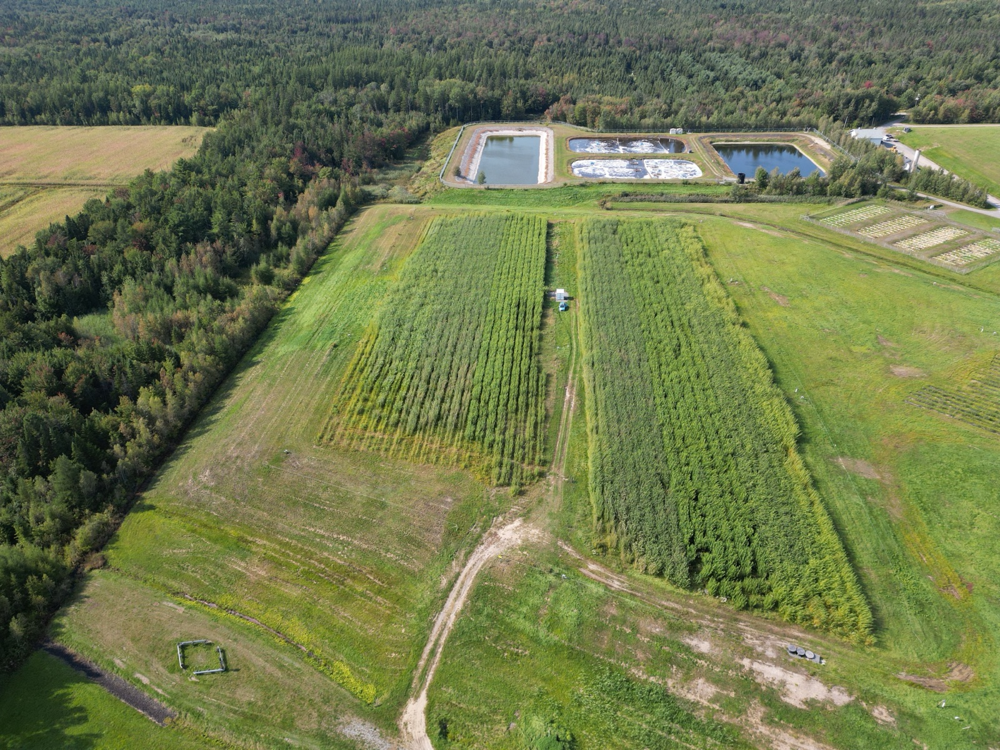

Evaplant®
Technologie brevetée de gestion des eaux impactées à zéro rejet liquide.
Le défi
Les sites d'enfouissement et les opérations minières génèrent des volumes importants d'eaux impactées — lixiviats, eaux de procédé — dont la gestion est complexe, coûteuse et énergivore.
La présence de contaminants persistants, dont les PFAS, complique davantage leur gestion. Les approches conventionnelles reposent sur des chaînes de traitement intensives, sans éliminer le risque de rejet vers l'environnement.


.jpg)


La solution
Evaplant® est une technologie brevetée de gestion des eaux impactées basée sur l'évapotranspiration de plantations de saules à croissance rapide.
Les eaux sont appliquées par irrigation de précision dans un système piloté en temps réel à partir de capteurs de sol, de données météo et de contrôles hydriques. L'eau est absorbée par les saules puis relâchée dans l'atmosphère, réduisant drastiquement les volumes à gérer.
Le système est conçu pour maintenir les flux hydriques à l'intérieur de la zone racinaire, évitant tout lessivage ou rejet hors site. En parallèle, le sol et les plantes participent à la transformation, à l'absorption ou à la rétention de nombreux contaminants, incluant certains PFAS, dont la gestion est en cours de validation scientifique.
Compatible avec les anciennes cellules d'enfouissement. Sur ce type de site, les racines de saules n'atteignent pas la membrane de recouvrement — le développement racinaire reste confiné dans la zone utile en surface. Comportement documenté et éprouvé sur nos sites en exploitation depuis plusieurs années.
Les étapes d'un projet Evaplant®
Ingénierie préliminaire et de détails
- Caractérisation physique et chimique du sol du site
- Caractérisation de l'effluent
- Essais de traitabilité
- Demande d'autorisation
Plantation des saules
- Préparation de la zone d'établissement
- Plantation mécanisée des saules
- Suivi d'établissement de la plantation et dépistage
Installation du système d'irrigation d'eaux usées
- Installation du système d'irrigation et de la station de pompage
- Mise en place d'instrumentation pour le suivi environnemental
Suivi technique et environnemental du procédé
- Opération et entretien du procédé
- Suivi environnemental du procédé
- Mesure des propriétés agronomiques et chimiques des saules
- Suivi saisonnier du rendement de biomasse
Témoignage vidéo
Découvrez le déploiement d'Evaplant® au lieu d'enfouissement technique de Sainte-Sophie (WM) à travers le témoignage de l'exploitant et des équipes Ramo sur le terrain.
Evaplant® sur le terrain

Complexe de Saint-Nicéphore
Gestion intégrée combinant Evaplant® et Evacap™ pour une performance maximale.

LET de Saint-Lambert-de-Lauzon
1,7 ha Evaplant® sur ancienne cellule : ~5 000 m³ de lixiviat réduits et ~117 t CO₂ éq. captées.

LET de Sainte-Sophie (WM)
~12,8 ha et ~204 800 saules : jusqu'à ~51 000 m³/an de lixiviat traités et ~242 t CO₂ éq./an captées.
Evaplant® — Foire aux questions
Evaplant® traite-t-il les eaux usées ?
Non. Evaplant® n'est pas une filière de traitement conventionnelle. Le système vise d'abord la réduction de volume par évapotranspiration, ce qui diminue fortement les besoins de traitement en aval. Les sols et les saules contribuent ensuite à la transformation, à l'absorption ou à la rétention de certains contaminants.
Quel type d'eaux peut être géré ?
Principalement des eaux impactées : lixiviats de sites d'enfouissement, eaux industrielles, eaux de procédé. La compatibilité dépend des concentrations et doit être validée en phase d'ingénierie.
Comment Evaplant® atteint-il le zéro rejet liquide ?
Le système contrôle précisément les apports d'eau via capteurs de sol et de climat pour maintenir les flux dans la zone racinaire. L'eau est évapotranspirée sans migration hors site lorsque les conditions sont respectées.
Quelle est la performance typique ?
En conditions standards, la capacité de réduction varie généralement entre 3 000 et 7 500 m³/ha/an, selon le climat, le sol et l'effluent.
Evaplant® fonctionne-t-il en hiver ?
Non. L'évapotranspiration est active durant la saison de croissance. En hiver, les volumes doivent être stockés ou gérés via un système complémentaire comme Evacap™.
Les racines des saules peuvent-elles endommager la membrane d'une ancienne cellule d'enfouissement ?
Non. Lorsque Evaplant® est déployé sur une ancienne cellule, les racines de saules n'atteignent pas la membrane et ne posent aucun risque pour l'intégrité du recouvrement. Le système d'irrigation de précision et la conception du substrat maintiennent les flux et le développement racinaire dans la zone utile, en surface. Ce comportement est documenté et éprouvé sur nos sites en exploitation depuis plusieurs années.
Quel est le rôle d'Evaplant® pour les PFAS ?
Les données actuelles montrent une rétention et une bioaccumulation partielle dans les sols et les plantes, mais les mécanismes et performances sont encore en validation scientifique.
Une question ?
Contactez-nous.
Notre équipe est disponible pour discuter de vos besoins et vous proposer la solution adaptée.